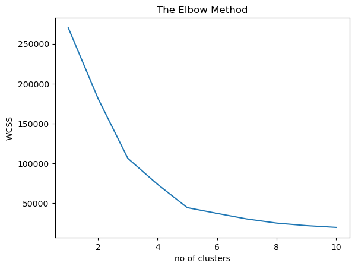
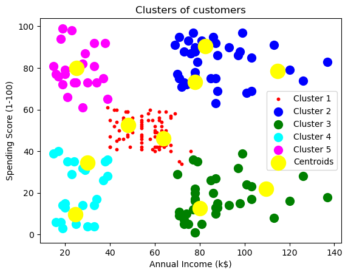

import numpy as np # linear algebra
import pandas as pd # data processing
import matplotlib.pyplot as plt # visualization
import seaborn as sns #visualization
from sklearn.cluster import KMeansMachine Learning-based Data Analysis
Minseo Park
[Practice 3] : UnSupervised Learning
0. Problem Define
1. Library import
2. Data upload
3. EDA(Exploratory Data Analysis) : 데이터 탐색
4. 데이터 전처리
- 4.1 Feature selection for the model
5. 모델링 :: K-Means Algorithm
- 5.1 Building the Model: finding out optimal k
- 5.2 Visualizating the ELBOW method to get the optimal value of K
- 5.3 Building K-Means ALgorithm
- 5.4 Visualizing all the clusters [0]: Problem Define
쇼핑몰 고객 그룹핑 - Data: Kaggle (https://www.kaggle.com/vjchoudhary7/customer-segmentation-tutorial-in-python)
1. Libraries setteting : import libraries
2. Data Upload
#import the dataset
dataset = pd.read_csv('./data/Mall_Customers.csv')dataset.head(5) #Print first 10 rows of the dataset.| CustomerID | Gender | Age | Annual Income (k$) | Spending Score (1-100) | |
|---|---|---|---|---|---|
| 0 | 1 | Male | 19 | 15 | 39 |
| 1 | 2 | Male | 21 | 15 | 81 |
| 2 | 3 | Female | 20 | 16 | 6 |
| 3 | 4 | Female | 23 | 16 | 77 |
| 4 | 5 | Female | 31 | 17 | 40 |
#total rows and colums in the dataset
dataset.shape(200, 5)3. 데이터 탐색(EDA: Exploratory Data Analysis) : 요약 통계량 확인하기
- pandas 로 불러온 데이터 살펴보기: head(), shape(), info(), describe(), value_counts(), unique() 등
- https://hogni.tistory.com/5
dataset.describe()| CustomerID | Age | Annual Income (k$) | Spending Score (1-100) | |
|---|---|---|---|---|
| count | 200.000000 | 200.000000 | 200.000000 | 200.000000 |
| mean | 100.500000 | 38.850000 | 60.560000 | 50.200000 |
| std | 57.879185 | 13.969007 | 26.264721 | 25.823522 |
| min | 1.000000 | 18.000000 | 15.000000 | 1.000000 |
| 25% | 50.750000 | 28.750000 | 41.500000 | 34.750000 |
| 50% | 100.500000 | 36.000000 | 61.500000 | 50.000000 |
| 75% | 150.250000 | 49.000000 | 78.000000 | 73.000000 |
| max | 200.000000 | 70.000000 | 137.000000 | 99.000000 |
dataset.info()<class 'pandas.core.frame.DataFrame'>
RangeIndex: 200 entries, 0 to 199
Data columns (total 5 columns):
# Column Non-Null Count Dtype
--- ------ -------------- -----
0 CustomerID 200 non-null int64
1 Gender 200 non-null object
2 Age 200 non-null int64
3 Annual Income (k$) 200 non-null int64
4 Spending Score (1-100) 200 non-null int64
dtypes: int64(4), object(1)
memory usage: 7.9+ KBdataset.isnull().sum()CustomerID 0
Gender 0
Age 0
Annual Income (k$) 0
Spending Score (1-100) 0
dtype: int644. 데이터 전처리
4.1 Feature selection for the model : “특성/속성/컬럼/x/독립변수/설명변수”선정하기
- 여기서는 2개의 변수만을 사용합니다.:Annual income and Spending Score
- 라벨링/정답지가 없습니다.
dataset.head()| CustomerID | Gender | Age | Annual Income (k$) | Spending Score (1-100) | |
|---|---|---|---|---|---|
| 0 | 1 | Male | 19 | 15 | 39 |
| 1 | 2 | Male | 21 | 15 | 81 |
| 2 | 3 | Female | 20 | 16 | 6 |
| 3 | 4 | Female | 23 | 16 | 77 |
| 4 | 5 | Female | 31 | 17 | 40 |
—————————————————————————————————
(참고 1) 특정 행과 열을 선택해서 살펴보기
- loc
- 데이터프레임의 행이나 컬럼에 label이나 boolean array로 접근.
- location의 약어로, 인간이 읽을 수 있는 label 값으로 데이터에 접근하는 것이다.
- iloc
- 데이터프레임의 행이나 컬럼에 인덱스 값으로 접근.
- integer location의 약어로, 컴퓨터가 읽을 수 있는 indexing 값으로 데이터에 접근하는 것이다.
(참고 1) 예제
df = pd.DataFrame({
"bid_id": [1, 2, 3],
"bidder_id": ["Gadi", "Conda", "Lion"],
"city": ["Seoul", "LA", "Sydney"],
"item": ["TV", "jewelry", "book"]}).set_index("bid_id")
df| bidder_id | city | item | |
|---|---|---|---|
| bid_id | |||
| 1 | Gadi | Seoul | TV |
| 2 | Conda | LA | jewelry |
| 3 | Lion | Sydney | book |
df.iloc[0] # 첫번째 행bidder_id Gadi
city Seoul
item TV
Name: 1, dtype: objectdf.iloc[1] # 두번째 행bidder_id Conda
city LA
item jewelry
Name: 2, dtype: objectdf.iloc[:,0] # 첫번째 열bid_id
1 Gadi
2 Conda
3 Lion
Name: bidder_id, dtype: objectdf.iloc[:,1] # 두번째 열bid_id
1 Seoul
2 LA
3 Sydney
Name: city, dtype: objectdf.loc[:, "city"] # 레이블이 city인 열bid_id
1 Seoul
2 LA
3 Sydney
Name: city, dtype: object—————————————————————————————————
dataset.head()| CustomerID | Gender | Age | Annual Income (k$) | Spending Score (1-100) | |
|---|---|---|---|---|---|
| 0 | 1 | Male | 19 | 15 | 39 |
| 1 | 2 | Male | 21 | 15 | 81 |
| 2 | 3 | Female | 20 | 16 | 6 |
| 3 | 4 | Female | 23 | 16 | 77 |
| 4 | 5 | Female | 31 | 17 | 40 |
X = dataset.iloc[:, [3,4]].values
# Annualincome and Spending Score (4번째, 5번째 열)XX = dataset.loc[:, ["Annual Income (k$)", "Spending Score (1-100)"]]X
# data checkingarray([[ 15, 39],
[ 15, 81],
[ 16, 6],
[ 16, 77],
[ 17, 40],
[ 17, 76],
[ 18, 6],
[ 18, 94],
[ 19, 3],
[ 19, 72],
[ 19, 14],
[ 19, 99],
[ 20, 15],
[ 20, 77],
[ 20, 13],
[ 20, 79],
[ 21, 35],
[ 21, 66],
[ 23, 29],
[ 23, 98],
[ 24, 35],
[ 24, 73],
[ 25, 5],
[ 25, 73],
[ 28, 14],
[ 28, 82],
[ 28, 32],
[ 28, 61],
[ 29, 31],
[ 29, 87],
[ 30, 4],
[ 30, 73],
[ 33, 4],
[ 33, 92],
[ 33, 14],
[ 33, 81],
[ 34, 17],
[ 34, 73],
[ 37, 26],
[ 37, 75],
[ 38, 35],
[ 38, 92],
[ 39, 36],
[ 39, 61],
[ 39, 28],
[ 39, 65],
[ 40, 55],
[ 40, 47],
[ 40, 42],
[ 40, 42],
[ 42, 52],
[ 42, 60],
[ 43, 54],
[ 43, 60],
[ 43, 45],
[ 43, 41],
[ 44, 50],
[ 44, 46],
[ 46, 51],
[ 46, 46],
[ 46, 56],
[ 46, 55],
[ 47, 52],
[ 47, 59],
[ 48, 51],
[ 48, 59],
[ 48, 50],
[ 48, 48],
[ 48, 59],
[ 48, 47],
[ 49, 55],
[ 49, 42],
[ 50, 49],
[ 50, 56],
[ 54, 47],
[ 54, 54],
[ 54, 53],
[ 54, 48],
[ 54, 52],
[ 54, 42],
[ 54, 51],
[ 54, 55],
[ 54, 41],
[ 54, 44],
[ 54, 57],
[ 54, 46],
[ 57, 58],
[ 57, 55],
[ 58, 60],
[ 58, 46],
[ 59, 55],
[ 59, 41],
[ 60, 49],
[ 60, 40],
[ 60, 42],
[ 60, 52],
[ 60, 47],
[ 60, 50],
[ 61, 42],
[ 61, 49],
[ 62, 41],
[ 62, 48],
[ 62, 59],
[ 62, 55],
[ 62, 56],
[ 62, 42],
[ 63, 50],
[ 63, 46],
[ 63, 43],
[ 63, 48],
[ 63, 52],
[ 63, 54],
[ 64, 42],
[ 64, 46],
[ 65, 48],
[ 65, 50],
[ 65, 43],
[ 65, 59],
[ 67, 43],
[ 67, 57],
[ 67, 56],
[ 67, 40],
[ 69, 58],
[ 69, 91],
[ 70, 29],
[ 70, 77],
[ 71, 35],
[ 71, 95],
[ 71, 11],
[ 71, 75],
[ 71, 9],
[ 71, 75],
[ 72, 34],
[ 72, 71],
[ 73, 5],
[ 73, 88],
[ 73, 7],
[ 73, 73],
[ 74, 10],
[ 74, 72],
[ 75, 5],
[ 75, 93],
[ 76, 40],
[ 76, 87],
[ 77, 12],
[ 77, 97],
[ 77, 36],
[ 77, 74],
[ 78, 22],
[ 78, 90],
[ 78, 17],
[ 78, 88],
[ 78, 20],
[ 78, 76],
[ 78, 16],
[ 78, 89],
[ 78, 1],
[ 78, 78],
[ 78, 1],
[ 78, 73],
[ 79, 35],
[ 79, 83],
[ 81, 5],
[ 81, 93],
[ 85, 26],
[ 85, 75],
[ 86, 20],
[ 86, 95],
[ 87, 27],
[ 87, 63],
[ 87, 13],
[ 87, 75],
[ 87, 10],
[ 87, 92],
[ 88, 13],
[ 88, 86],
[ 88, 15],
[ 88, 69],
[ 93, 14],
[ 93, 90],
[ 97, 32],
[ 97, 86],
[ 98, 15],
[ 98, 88],
[ 99, 39],
[ 99, 97],
[101, 24],
[101, 68],
[103, 17],
[103, 85],
[103, 23],
[103, 69],
[113, 8],
[113, 91],
[120, 16],
[120, 79],
[126, 28],
[126, 74],
[137, 18],
[137, 83]], dtype=int64)XX| Annual Income (k$) | Spending Score (1-100) | |
|---|---|---|
| 0 | 15 | 39 |
| 1 | 15 | 81 |
| 2 | 16 | 6 |
| 3 | 16 | 77 |
| 4 | 17 | 40 |
| ... | ... | ... |
| 195 | 120 | 79 |
| 196 | 126 | 28 |
| 197 | 126 | 74 |
| 198 | 137 | 18 |
| 199 | 137 | 83 |
200 rows × 2 columns
————————————————————————————
0. Problem Define
1. Library import
2. Data upload
3. EDA(Exploratory Data Analysis) : 데이터 탐색
4. 데이터 전처리
- 4.1 Feature selection for the model
5. 모델링 :: K-Means Algorithm
- 5.1 Building the Model: finding out optimal k
- 5.2 Visualizating the ELBOW method to get the optimal value of K
- 5.3 Building K-Means ALgorithm
- 5.4 Visualizing all the clusters ————————————————————————————
5. 모델링 : K-Means Algorithm
5.1 Building the Model : k 값을 정합니다.
- k-means 알고리즘 최적의 k 값을 구해서 clustering 하는 것입니다. 최적의 k 값을 찾기위한 방법으로 팔꿈치(elbow) 법칙?? 을 사용합니다.
- elbow method 란 cluster 간의 거리의 합이 급격히 떨어지는 구간이 생기게 됩니다. 그때 k 값을 군집의 개수로 사용합니다.
- 참고 사이트: https://steadiness-193.tistory.com/285
from sklearn.cluster import KMeans
WCSS=[]
### Within-Cluster-Sum-of-Squares (WCSS)
### https://analyticsindiamag.com/beginners-guide-to-k-means-clustering/
### 설명과 애니매이션으로 clustering에 대해서 잘 설명 되어 있습니다.
### 그림만 따라가도.. 아하!! 하고 이해가 되실 것 같습니다. WCSS[]for i in range (1,11):
kmeans = KMeans(n_clusters=i, init='k-means++', random_state=0)
kmeans.fit(X)
interia=kmeans.inertia_
#### inertia_ is the formula used to segregate the data points into clusters
#### inertia = 관성
#### Cluster 간의 거리의 합을 나타내는 inertia가 급격히 떨어지는 구간이 생기는데
#### 이 지점의 K 값을 군집의 개수로 사용 inertia_속성으로 확인할 수 있다
print('k:', i, 'inertia:', interia)
WCSS.append(kmeans.inertia_)C:\ProgramData\anaconda3\Lib\site-packages\sklearn\cluster\_kmeans.py:1412: FutureWarning: The default value of `n_init` will change from 10 to 'auto' in 1.4. Set the value of `n_init` explicitly to suppress the warning
super()._check_params_vs_input(X, default_n_init=10)
C:\ProgramData\anaconda3\Lib\site-packages\sklearn\cluster\_kmeans.py:1436: UserWarning: KMeans is known to have a memory leak on Windows with MKL, when there are less chunks than available threads. You can avoid it by setting the environment variable OMP_NUM_THREADS=1.
warnings.warn(k: 1 inertia: 269981.28C:\ProgramData\anaconda3\Lib\site-packages\sklearn\cluster\_kmeans.py:1412: FutureWarning: The default value of `n_init` will change from 10 to 'auto' in 1.4. Set the value of `n_init` explicitly to suppress the warning
super()._check_params_vs_input(X, default_n_init=10)
C:\ProgramData\anaconda3\Lib\site-packages\sklearn\cluster\_kmeans.py:1436: UserWarning: KMeans is known to have a memory leak on Windows with MKL, when there are less chunks than available threads. You can avoid it by setting the environment variable OMP_NUM_THREADS=1.
warnings.warn(k: 2 inertia: 181363.59595959596C:\ProgramData\anaconda3\Lib\site-packages\sklearn\cluster\_kmeans.py:1412: FutureWarning: The default value of `n_init` will change from 10 to 'auto' in 1.4. Set the value of `n_init` explicitly to suppress the warning
super()._check_params_vs_input(X, default_n_init=10)
C:\ProgramData\anaconda3\Lib\site-packages\sklearn\cluster\_kmeans.py:1436: UserWarning: KMeans is known to have a memory leak on Windows with MKL, when there are less chunks than available threads. You can avoid it by setting the environment variable OMP_NUM_THREADS=1.
warnings.warn(k: 3 inertia: 106348.37306211119C:\ProgramData\anaconda3\Lib\site-packages\sklearn\cluster\_kmeans.py:1412: FutureWarning: The default value of `n_init` will change from 10 to 'auto' in 1.4. Set the value of `n_init` explicitly to suppress the warning
super()._check_params_vs_input(X, default_n_init=10)
C:\ProgramData\anaconda3\Lib\site-packages\sklearn\cluster\_kmeans.py:1436: UserWarning: KMeans is known to have a memory leak on Windows with MKL, when there are less chunks than available threads. You can avoid it by setting the environment variable OMP_NUM_THREADS=1.
warnings.warn(k: 4 inertia: 73679.78903948834C:\ProgramData\anaconda3\Lib\site-packages\sklearn\cluster\_kmeans.py:1412: FutureWarning: The default value of `n_init` will change from 10 to 'auto' in 1.4. Set the value of `n_init` explicitly to suppress the warning
super()._check_params_vs_input(X, default_n_init=10)
C:\ProgramData\anaconda3\Lib\site-packages\sklearn\cluster\_kmeans.py:1436: UserWarning: KMeans is known to have a memory leak on Windows with MKL, when there are less chunks than available threads. You can avoid it by setting the environment variable OMP_NUM_THREADS=1.
warnings.warn(k: 5 inertia: 44448.45544793371C:\ProgramData\anaconda3\Lib\site-packages\sklearn\cluster\_kmeans.py:1412: FutureWarning: The default value of `n_init` will change from 10 to 'auto' in 1.4. Set the value of `n_init` explicitly to suppress the warning
super()._check_params_vs_input(X, default_n_init=10)
C:\ProgramData\anaconda3\Lib\site-packages\sklearn\cluster\_kmeans.py:1436: UserWarning: KMeans is known to have a memory leak on Windows with MKL, when there are less chunks than available threads. You can avoid it by setting the environment variable OMP_NUM_THREADS=1.
warnings.warn(k: 6 inertia: 37265.86520484346C:\ProgramData\anaconda3\Lib\site-packages\sklearn\cluster\_kmeans.py:1412: FutureWarning: The default value of `n_init` will change from 10 to 'auto' in 1.4. Set the value of `n_init` explicitly to suppress the warning
super()._check_params_vs_input(X, default_n_init=10)
C:\ProgramData\anaconda3\Lib\site-packages\sklearn\cluster\_kmeans.py:1436: UserWarning: KMeans is known to have a memory leak on Windows with MKL, when there are less chunks than available threads. You can avoid it by setting the environment variable OMP_NUM_THREADS=1.
warnings.warn(k: 7 inertia: 30259.65720728547C:\ProgramData\anaconda3\Lib\site-packages\sklearn\cluster\_kmeans.py:1412: FutureWarning: The default value of `n_init` will change from 10 to 'auto' in 1.4. Set the value of `n_init` explicitly to suppress the warning
super()._check_params_vs_input(X, default_n_init=10)
C:\ProgramData\anaconda3\Lib\site-packages\sklearn\cluster\_kmeans.py:1436: UserWarning: KMeans is known to have a memory leak on Windows with MKL, when there are less chunks than available threads. You can avoid it by setting the environment variable OMP_NUM_THREADS=1.
warnings.warn(k: 8 inertia: 25050.832307547527C:\ProgramData\anaconda3\Lib\site-packages\sklearn\cluster\_kmeans.py:1412: FutureWarning: The default value of `n_init` will change from 10 to 'auto' in 1.4. Set the value of `n_init` explicitly to suppress the warning
super()._check_params_vs_input(X, default_n_init=10)
C:\ProgramData\anaconda3\Lib\site-packages\sklearn\cluster\_kmeans.py:1436: UserWarning: KMeans is known to have a memory leak on Windows with MKL, when there are less chunks than available threads. You can avoid it by setting the environment variable OMP_NUM_THREADS=1.
warnings.warn(k: 9 inertia: 21862.09267218289C:\ProgramData\anaconda3\Lib\site-packages\sklearn\cluster\_kmeans.py:1412: FutureWarning: The default value of `n_init` will change from 10 to 'auto' in 1.4. Set the value of `n_init` explicitly to suppress the warning
super()._check_params_vs_input(X, default_n_init=10)
C:\ProgramData\anaconda3\Lib\site-packages\sklearn\cluster\_kmeans.py:1436: UserWarning: KMeans is known to have a memory leak on Windows with MKL, when there are less chunks than available threads. You can avoid it by setting the environment variable OMP_NUM_THREADS=1.
warnings.warn(k: 10 inertia: 19657.783608703958### numpy version should be downgraded 1.21.4
### https://www.datasciencelearner.com/how-to-downgrade-numpy-steps/
### or
### https://mydevjourney.tistory.com/76
### !pip install threadpoolctl==3.1.0————————————————————————————
참고 1) 변수 설명
- n_clusters: k-means의 k를 의미하는 군집형성의 개수를 뜻합니다.
- random_state를 통해서 난수 고정을하는 것을 의미합니다. 학습결과의 동일성을 위해서입니다.
- 참고사이트 및 sklearn 에서 KMeans clustering site: https://scikit-learn.org/stable/modules/generated/sklearn.cluster.KMeans.html
- init{‘k-means++’, ‘random’},
- ‘k-means++’ : selects initial cluster centers for k-mean clustering in a smart way to speed up convergence.
- ‘random’: choose n_clusters observations (rows) at random from data for the initial centroids.
- default는 ‘k-means++’ 입니다.
- init{‘k-means++’, ‘random’},
————————————————————————————
0. Problem Define
1. Library import
2. Data upload
3. EDA(Exploratory Data Analysis) : 데이터 탐색
4. 데이터 전처리
- 4.1 Feature selection for the model
5. 모델링 :: K-Means Algorithm
- 5.1 Building the Model: finding out optimal k
- 5.2 Visualizating the ELBOW method to get the optimal value of K
- 5.3 Building K-Means ALgorithm
- 5.4 Visualizing all the clusters ————————————————————————————
5.2 Visualizating the ELBOW method to get the optimal value of K
- 최적의 k 값을 찾기위한 방법으로 팔꿈치(elbow) 법칙?? 을 사용합니다.
- elbow method 란 cluster 간의 거리의 합이 급격히 떨어지는 구간이 생기게 됩니다. 그때 k 값을 군집의 개수로 사용합니다.
### 가정 ###
### The max number of cluster would be 10.
### for i in range(1,11):
### kmeans = KMeans(n_clusters= i, init='k-means++', random_state=0)
### kmeans.fit(X)
### WCSS.append(kmeans.inertia_)plt.plot(range(1,11), WCSS)
plt.title('The Elbow Method')
plt.xlabel('no of clusters')
plt.ylabel('WCSS')
plt.show()
해석 )
- If you zoom out this curve then you will see that last elbow comes at k=5
- no matter what range we select
- ex) (1,21) also i will see the same behavior but if we chose higher range it is little difficult to visualize the ELBOW
- Finally, we got that k=5
————————————————————————————
0. Problem Define
1. Library import
2. Data upload
3. EDA(Exploratory Data Analysis) : 데이터 탐색
4. 데이터 전처리
- 4.1 Feature selection for the model
5. 모델링 :: K-Means Algorithm
- 5.1 Building the Model: finding out optimal k
- 5.2 Visualizating the ELBOW method to get the optimal value of K
- 5.3 Building K-Means ALgorithm
- 5.4 Visualizing all the clusters ————————————————————————————
5.3 Building K-Means ALgorithm
kmeansmodel = KMeans(n_clusters= 5, init='k-means++', max_iter=300, random_state=0)
y_kmeans= kmeansmodel.fit_predict(X)
y_kmeansC:\ProgramData\anaconda3\Lib\site-packages\sklearn\cluster\_kmeans.py:1412: FutureWarning: The default value of `n_init` will change from 10 to 'auto' in 1.4. Set the value of `n_init` explicitly to suppress the warning
super()._check_params_vs_input(X, default_n_init=10)
C:\ProgramData\anaconda3\Lib\site-packages\sklearn\cluster\_kmeans.py:1436: UserWarning: KMeans is known to have a memory leak on Windows with MKL, when there are less chunks than available threads. You can avoid it by setting the environment variable OMP_NUM_THREADS=1.
warnings.warn(array([3, 4, 3, 4, 3, 4, 3, 4, 3, 4, 3, 4, 3, 4, 3, 4, 3, 4, 3, 4, 3, 4,
3, 4, 3, 4, 3, 4, 3, 4, 3, 4, 3, 4, 3, 4, 3, 4, 3, 4, 3, 4, 3, 0,
3, 4, 0, 0, 0, 0, 0, 0, 0, 0, 0, 0, 0, 0, 0, 0, 0, 0, 0, 0, 0, 0,
0, 0, 0, 0, 0, 0, 0, 0, 0, 0, 0, 0, 0, 0, 0, 0, 0, 0, 0, 0, 0, 0,
0, 0, 0, 0, 0, 0, 0, 0, 0, 0, 0, 0, 0, 0, 0, 0, 0, 0, 0, 0, 0, 0,
0, 0, 0, 0, 0, 0, 0, 0, 0, 0, 0, 0, 0, 1, 2, 1, 0, 1, 2, 1, 2, 1,
0, 1, 2, 1, 2, 1, 2, 1, 2, 1, 0, 1, 2, 1, 2, 1, 2, 1, 2, 1, 2, 1,
2, 1, 2, 1, 2, 1, 2, 1, 2, 1, 2, 1, 2, 1, 2, 1, 2, 1, 2, 1, 2, 1,
2, 1, 2, 1, 2, 1, 2, 1, 2, 1, 2, 1, 2, 1, 2, 1, 2, 1, 2, 1, 2, 1,
2, 1])X[0:3,]array([[15, 39],
[15, 81],
[16, 6]], dtype=int64)dataset.head(3)| CustomerID | Gender | Age | Annual Income (k$) | Spending Score (1-100) | |
|---|---|---|---|---|---|
| 0 | 1 | Male | 19 | 15 | 39 |
| 1 | 2 | Male | 21 | 15 | 81 |
| 2 | 3 | Female | 20 | 16 | 6 |
XX.head(3)| Annual Income (k$) | Spending Score (1-100) | |
|---|---|---|
| 0 | 15 | 39 |
| 1 | 15 | 81 |
| 2 | 16 | 6 |
해석)
- For unsupervised learning we use “fit_predict()” wherein for supervised learning we use “fit_tranform()”
- y_kmeans is the final model.
- income: 15, score: 39 는 그룹 4에 속한다.
- X = dataset.iloc[:, [3,4]].values —-> Annualincome and Spending Score
————————————————————————————
0. Problem Define
1. Library import
2. Data upload
3. EDA(Exploratory Data Analysis) : 데이터 탐색
4. 데이터 전처리
- 4.1 Feature selection for the model
5. 모델링 :: K-Means Algorithm
- 5.1 Building the Model: finding out optimal k
- 5.2 Visualizating the ELBOW method to get the optimal value of K
- 5.3 Building K-Means ALgorithm
- 5.4 Visualizing all the clusters ————————————————————————————
5.4 Visualizing all the clusters
### 참고 사이트: https://m.blog.naver.com/PostView.naver?isHttpsRedirect=true&blogId=tt2t2am1118&logNo=221183481798
plt.scatter(X[y_kmeans == 0, 0], X[y_kmeans == 0, 1], s = 10, c = 'red', label = 'Cluster 1')
plt.scatter(X[y_kmeans == 1, 0], X[y_kmeans == 1, 1], s = 100, c = 'blue', label = 'Cluster 2')
plt.scatter(X[y_kmeans == 2, 0], X[y_kmeans == 2, 1], s = 100, c = 'green', label = 'Cluster 3')
plt.scatter(X[y_kmeans == 3, 0], X[y_kmeans == 3, 1], s = 100, c = 'cyan', label = 'Cluster 4')
plt.scatter(X[y_kmeans == 4, 0], X[y_kmeans == 4, 1], s = 100, c = 'magenta', label = 'Cluster 5')
plt.scatter(kmeans.cluster_centers_[:, 0], kmeans.cluster_centers_[:, 1], s = 300, c = 'yellow', label = 'Centroids')
plt.title('Clusters of customers')
plt.xlabel('Annual Income (k$)')
plt.ylabel('Spending Score (1-100)')
plt.legend()
plt.show()
y_kmeansarray([3, 4, 3, 4, 3, 4, 3, 4, 3, 4, 3, 4, 3, 4, 3, 4, 3, 4, 3, 4, 3, 4,
3, 4, 3, 4, 3, 4, 3, 4, 3, 4, 3, 4, 3, 4, 3, 4, 3, 4, 3, 4, 3, 0,
3, 4, 0, 0, 0, 0, 0, 0, 0, 0, 0, 0, 0, 0, 0, 0, 0, 0, 0, 0, 0, 0,
0, 0, 0, 0, 0, 0, 0, 0, 0, 0, 0, 0, 0, 0, 0, 0, 0, 0, 0, 0, 0, 0,
0, 0, 0, 0, 0, 0, 0, 0, 0, 0, 0, 0, 0, 0, 0, 0, 0, 0, 0, 0, 0, 0,
0, 0, 0, 0, 0, 0, 0, 0, 0, 0, 0, 0, 0, 1, 2, 1, 0, 1, 2, 1, 2, 1,
0, 1, 2, 1, 2, 1, 2, 1, 2, 1, 0, 1, 2, 1, 2, 1, 2, 1, 2, 1, 2, 1,
2, 1, 2, 1, 2, 1, 2, 1, 2, 1, 2, 1, 2, 1, 2, 1, 2, 1, 2, 1, 2, 1,
2, 1, 2, 1, 2, 1, 2, 1, 2, 1, 2, 1, 2, 1, 2, 1, 2, 1, 2, 1, 2, 1,
2, 1])X[y_kmeans == 0, 0] ## Annual Income (k$)array([39, 40, 40, 40, 40, 42, 42, 43, 43, 43, 43, 44, 44, 46, 46, 46, 46,
47, 47, 48, 48, 48, 48, 48, 48, 49, 49, 50, 50, 54, 54, 54, 54, 54,
54, 54, 54, 54, 54, 54, 54, 57, 57, 58, 58, 59, 59, 60, 60, 60, 60,
60, 60, 61, 61, 62, 62, 62, 62, 62, 62, 63, 63, 63, 63, 63, 63, 64,
64, 65, 65, 65, 65, 67, 67, 67, 67, 69, 71, 72, 76], dtype=int64)X[y_kmeans == 4, 0] ## Annual Income (k$)array([15, 16, 17, 18, 19, 19, 20, 20, 21, 23, 24, 25, 28, 28, 29, 30, 33,
33, 34, 37, 38, 39], dtype=int64)XX.head(3)| Annual Income (k$) | Spending Score (1-100) | |
|---|---|---|
| 0 | 15 | 39 |
| 1 | 15 | 81 |
| 2 | 16 | 6 |
X[y_kmeans == 4, 1] ##Spending Score (1-100)array([81, 77, 76, 94, 72, 99, 77, 79, 66, 98, 73, 73, 82, 61, 87, 73, 92,
81, 73, 75, 92, 65], dtype=int64)X[y_kmeans == 0, 1] ##Spending Score (1-100)array([61, 55, 47, 42, 42, 52, 60, 54, 60, 45, 41, 50, 46, 51, 46, 56, 55,
52, 59, 51, 59, 50, 48, 59, 47, 55, 42, 49, 56, 47, 54, 53, 48, 52,
42, 51, 55, 41, 44, 57, 46, 58, 55, 60, 46, 55, 41, 49, 40, 42, 52,
47, 50, 42, 49, 41, 48, 59, 55, 56, 42, 50, 46, 43, 48, 52, 54, 42,
46, 48, 50, 43, 59, 43, 57, 56, 40, 58, 35, 34, 40], dtype=int64)from IPython.display import Image
Image("kmeans.png", width=600, height=400)FileNotFoundError: No such file or directory: 'kmeans.png'FileNotFoundError: No such file or directory: 'kmeans.png'<IPython.core.display.Image object>모델해석하기)
- Cluster 1 (Red Color) -> earning high but spending less
- cluster 2 (Blue Colr) -> average in terms of earning and spending
- cluster 3 (Green Color) -> earning high and also spending high
- 만약 쇼핑몰에서 매출을 올리면? 이 그룹을 타켓팅해서 올려야 될 것입니다.
- 이 고객 그룹에게 마케팅을 해야 될 것입니다.
- 분석의 insight 결론이 될 것입니다.
- cluster 4 (cyan Color) -> earning less but spending more
- Cluster 5 (magenta Color) -> Earning less , spending less